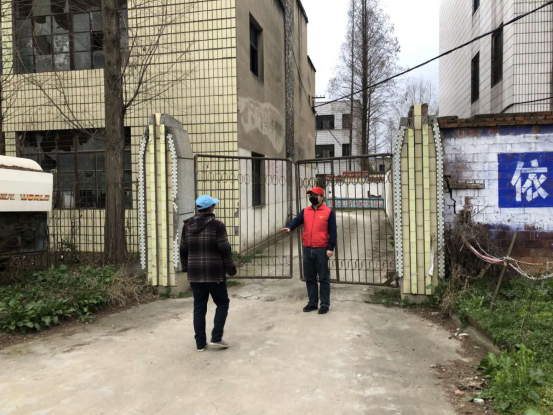
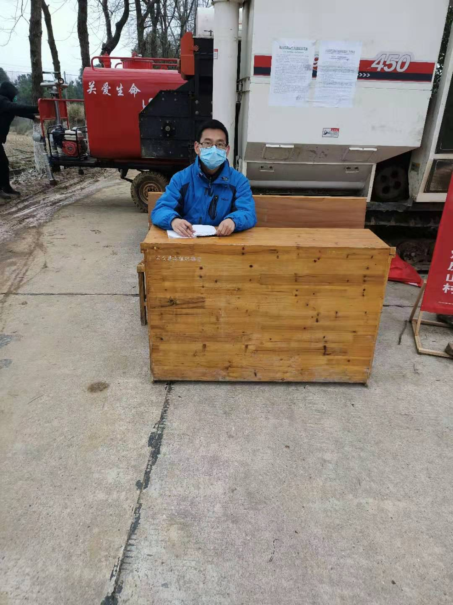
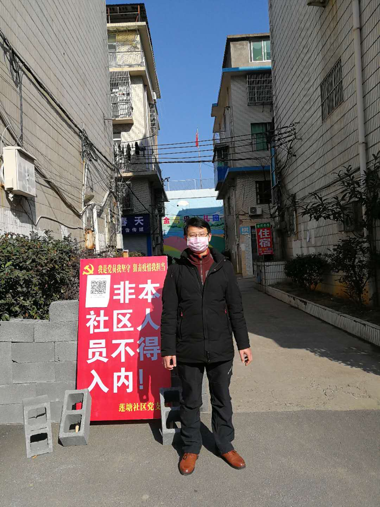
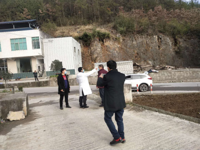
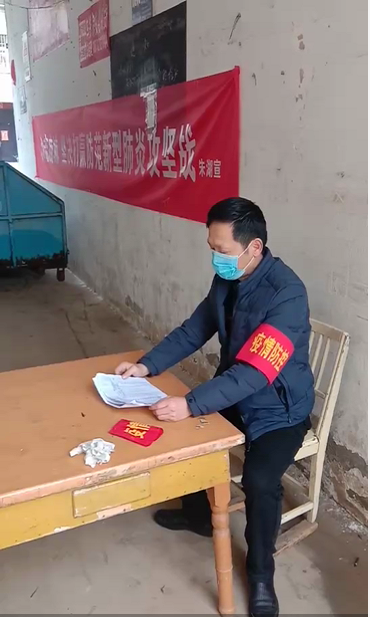
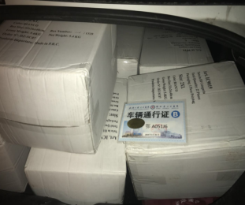
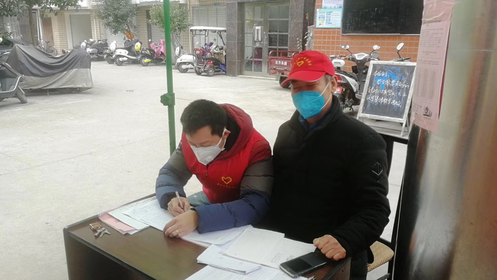

“武汉是英雄的城市，湖北人民、武汉人民是英雄的人民，历史上从来没有被艰难险阻压垮过，只要同志们同心协力、英勇奋斗、共克时艰，我们一定能取得疫情防控斗争的全面胜利！”
在习近平总书记的坚定号召下，面对愈发严峻的疫情形势，设计院人挺身而出、勇敢无畏、下沉到一线，力争为抗疫工作贡献力量。
党员亮身份，勇挑重担我先行
2月6日，像往常一样，因疫情原因无法返回武汉的设计院规划党支部书记、规划中心副总经理张晨，正在老家襄阳市襄州区黄集镇马集村的家中翻看着手机中关于防疫的各类信息。一条单位同事发来的信息，打破了此刻的宁静。
信息中倡议党员同志结合实际情况，积极就近参加所在社区的疫情防控工作。早已按捺不住的张晨立刻起身，换掉睡衣，向住地襄阳市襄州区黄集镇马集村防控部门报到，成为了一名抗“疫”志愿服务者。
走上志愿者岗位的张晨，不敢有一丝的马虎。在与村干部讨论具体工作安排后，张晨参与了全面摸排马集村从武汉返乡人员信息，并对其身体状况进行每日监测的工作。为做好监测工作，张晨还建立了微信群，负责对包括他自己在内的所有武汉返乡人员进行每日两次的体温监测与记录，每日将情况梳理报送至马集村防控指挥部。此外，张晨和马集村干部及其他党员志愿者一起轮流排班，对进出村的路口、超市、出入口等重点关口驻点防控，对村民进行耐心宣传引导，严格管控出入人员，为居民统一采购生活物资。

张晨在襄阳市襄州区黄集镇马集村开展志愿服务
当天，向所在村组报名申请参加志愿者活动的，还有设计院输电分公司结构处副处长罗先国。
罗先国在老家荆州市公安县甘家厂乡炊皮山村完成相关志愿者培训后，第二天一大早，罗先国便与其他志愿者一道帮助村里开展新型冠状病毒肺炎防疫工作，对外地返乡人员挨家挨户入户走访调查并发放告知书，向村民开展面对面地毯式宣传教育，提醒返乡村民加强重视，及时做好卫生预防工作，戴好口罩，尽量不要外出，减少到通风不畅和人流密集场所活动。同时，罗先国还配合村委会工作人员、卫生站做好乡村居民体温监测、日常喷洒消毒等工作。
当大家问他就不怕被感染时，他只淡淡的说，“相对于一线医护人员，我所在的环境好多了，再说，作为一名共产党员，国家遇到困难的时候，你不冲上去，谁冲上去”。

抗疫一线的罗先国
设计院规划分公司系统处处长廖美，在老家江西省玉山县冰溪镇向当地社区申请加入志愿者，在小区出入口执勤，检查小区出入人员的通行证，避免外人进入本小区，并监督出入小区人员，进行详细信息登记。廖美对家人说：“作为一名党员志愿者，我会履行自己的责任义务，安心做好志愿者工作，疫情一天不结束，我一天不退缩！”

廖美在社区值守
设计院勘测分公司测量处谭学春，自疫情爆发以来，他一直密切关注着疫情动态。在得知自己所在的恩施巴东县曾家岭村防疫物资极度缺乏时，谭学春积极响应村里捐款号召，捐款帮助村里购买防疫物资。同时，他还主动向村委会提出，要求加入防疫阻击战一线，跟其他志愿者一样到村里主要交通路口执勤。从2月8日起每天早上8时到晚上22时，谭学春在村里唯一的出入口对过往的车辆和行人进行登记，给车辆喷洒药水进行消毒，并帮助来往行人进行体温测量，对非紧急情况的行人及车辆进行劝返。
“作为一名党员，这是我应该做的”。谭学春说，“他一定会坚持下去，只要组织有需要，他随时愿意为抗击疫情贡献出一份自己的力量。”

谭学春对来往人员进行摸排
抗疫志愿者,哪里需要到哪里
“封闭式管理，请不要出门，谢谢配合！”
“请先量一下体温，并告诉我你的姓名和电话，谢谢配合。”
一次次询问，一本本记录，一遍遍重复。这就是王耀东的日常。
王耀东是设计院环宇监理公司的一名驾驶员，平日里，大家亲切的称呼他为“王师傅”。春节假期，他回到老家孝感市孝南区朱湖农场，在邻居们的眼里，王耀东是一个有恒心、有干劲的人，新冠肺炎疫情防控命令下达后，看到小区的微信群里每天宣传疫情防控知识，王耀东主动请缨，成为小区疫情监测点的一名志愿者，每天登记过往车辆和人员，为他们讲解防控知识。
值班过程中，王耀东严格落实一问、一测、一登、一消毒的流程，对所有车辆所有人员严格检疫，为小区疫情防控出力。
“作为小区的住户，我有责任和义务为小区的安全尽自己的一份微薄之力，在每天的执勤防控工作中，高度负责，认真履职，严防疫情”。谈到防疫志愿工作，王耀东这样说道。

正在执勤的王耀东
设计院印务中心的陈扬，在武汉新冠疫情爆发的第一时间主动联系到武汉志愿服务组织，全身心投入到一线防疫志愿服务的工作中。
1月30日，在得知在华南执勤的江汉分局民警急需防护物资后，陈扬立即前往运送物资。送完医疗物资后的陈扬正准备回家，突然收到群里省人民和市儿童医院防疫物资的求助信息，陈扬立刻调转车头，赶赴医院，将防疫物资运送到位。第二天上午，陈扬又接到志愿服务队紧急任务，火线为市一医院运送医用口罩。工作人员看到第一时间赶赴现场的陈扬，不禁感叹到：“速度真快啊，小伙子！”
随后，陈扬又先后为雷神山医院和武昌区防疫指挥部运送食品等物资，努力为疫区病人和医护人员提供有力的后勤保障。

陈杨分拣运送防护物资
在这场“抗疫战”中，来自设计院规划分公司的叶成和家人冲在前面，与岳父一同参与到志愿服务中，为社区防控工作贡献力量。
叶成春节前回到丹江口市岳父母家，随着疫情的日益严重，他们所居住的小区很快就成立了临时党支部，主要由小区内的党员业主组成。作为退休老党员的岳父，第一时间加入党支部，从武汉回去的叶成在自我隔离期满后也随同岳父一起，加入了小区临时党支部，俩人一起参与了小区内的疫情防控工作，并被安排在小区出入口值班。
“今天值班安排终于轮到我了，穿上志愿者的衣服，该尽我的义务了。”叶成开心地说。

叶成在社区执勤
这些冲在抗疫前线的电建人，他们是志愿者，是别人的父亲、母亲、丈夫、妻子、孩子，他们更是我们的英雄！
疫情无情，人间有爱。每一个前线的斗士，都是颗闪亮的星，以平凡之躯、平凡之力，做出不平凡的事情，为大家照亮前方的路。相信春暖花开之时，一切都会美好如初！